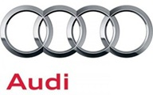

German vehicle companies are well-known for building luxury cars, which have proven quite popular with people in various parts of the world. We will be focusing on three such brands in this page:

Audi as we know it was founded in 1949, and is a subsidiary of Volkswagen Group. Mercedes-Benz was co-founded in 1926 by Karl Benz, who was the first person to file a patent for the modern automobile. BMW (short for "Bayerische Motoren Werke") started out as a manufacturer for planes during the First World War, before moving on to produce motorcycles and cars.